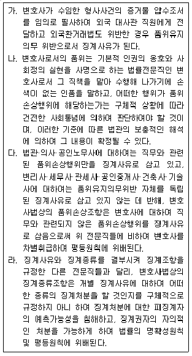
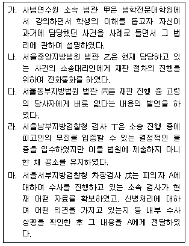
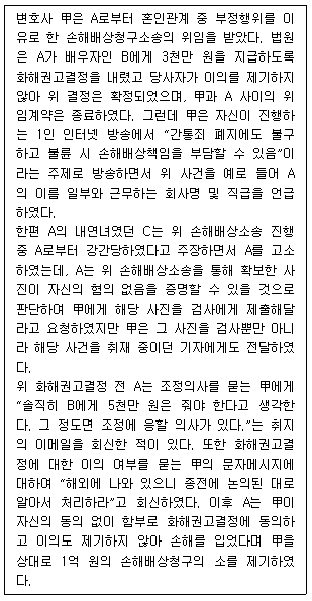
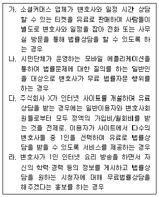
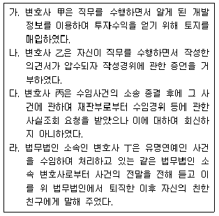
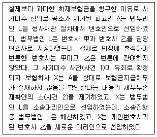
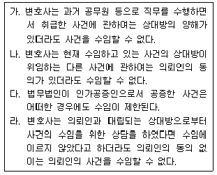
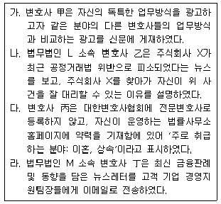
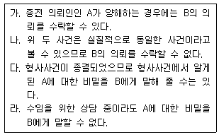
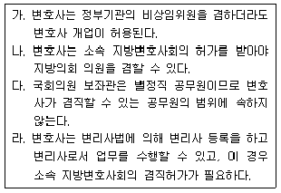

법조윤리 (2019-08-03 기출문제)
1과목: 임의 구분
1. 변호사의 품위유지의무에 관한 설명 중 옳은 것을 모두 고른 것은? (다툼이 있는 경우 판례에 의함)

- 가, 나
- 가, 다
- 가, 라
- 나, 다
(정답률: 알수없음)

2. 외국법자문법률사무소에 관한 설명 중 옳은 것은?
- 외국법자문사는 국제중재사건의 대리를 제외한 원자격국의 법령에 관한 자문만으로 그 업무범위를 엄격히 제한하는 경우 2개 이상의 외국법자문법률사무소를 설립할 수 있다.
- 외국법자문법률사무소의 설립인가를 받기 위해서는 그 본점사무소가 외국법자문법률사무소의 업무와 관련한 민사·상사상 책임에 대하여 그 이행을 보증하여야 한다.
- 법무부장관의 설립인가를 받은 외국법자문법률사무소의 대표자는 그 고시가 있었던 날부터 3개월 이내에 법무부에 목적, 명칭 및 사무소의 소재지, 구성원의 성명 및 주소와 외국법자문법률사무소를 대표할 구성원의 주소 등을 등록 신청하여야 한다.
- 외국법자문법률사무소는 원자격국의 법령에 관한 사무, 국제중재사건의 대리, 대한민국 법령에 관한 자문을 처리할 수 있다.
(정답률: 알수없음)
3. 변호사의 공익활동에 관한 설명 중 옳지 않은 것은?
- 대한변호사협회 또는 지방변호사회가 지정하는 사회복지시설에 대한 기부행위는 공익활동으로 인정된다.
- 자선단체, 종교단체 등 공익적 성격을 가진 단체에 무료로 법률서비스를 제공한 활동으로 지방변호사회의 인정을 받은 것은 공익활동에 해당된다.
- 법무법인은 그 구성원인 개인회원 및 소속변호사 전원을 대신하여 공익활동을 행할 변호사를 지정할 수 있다.
- 법조경력이 2년 미만이거나 60세 이상인 회원은 공익활동의 의무가 면제된다.
(정답률: 알수없음)
4. 변호사의 품위유지의무 위반에 관한 설명 중 옳지 않은 것은? (다툼이 있는 경우 판례에 의함)
- 변호사가 사건을 수임한 후 소제기를 지연시켜 손해배상청구권의 시효가 완성되어 패소판결로 의뢰인이 손해를 보게 되었고 그 손해보전을 위하여 일정 금액을 분할 지급하기로 약정하였으나 이행하지 않았다면, 이는 징계사유에 해당될 수 있다.
- 변호사가 의뢰인의 분쟁에 개입해서 의뢰인의 상대방과의 관계에서 직접 분쟁의 당사자로 발전하여 상대방으로부터 배당이의의 소를 제기 당한 경우 이는 정상적인 변호사 업무활동을 벗어난 변호사로서의 품위를 손상하는 행위로 볼 수 없다.
- 변호사가 사무직원 채용 면접 중 여성 지원자에게 “애인이 있느냐? 만나는 남자 친구가 다른 여자와 3박 4일의 여행을 다녀왔다는 사실을 사후에 알았다면 어떻게 하겠는가?”라는 질문을 하였다면 이러한 행위는 징계사유에 해당될 수 있다.
- 변호사가 범죄나 징계의 전력이 없는 상태에서 변호사로서의 품위를 심각하게 손상하는 행위를 한 경우라도 영구제명이 될 수 없다.
(정답률: 알수없음)
5. 변호사와 의뢰인의 관계에 관한 설명 중 옳은 것은? (다툼이 있는 경우 판례에 의함)
- 변호사가 무상으로 사건을 수임한 경우에는 의뢰인의 승낙 없이도 복대리인을 선임할 수 있다.
- 피고인이 법인인 형사사건에서 그 법인의 대표이사가 변호인을 선임하는 경우에 그 선임권을 제3자에게 위임하여 그 제3자로 하여금 변호인을 선임하게 할 수 있다.
- 소송위임은 소송대리권의 발생이라는 소송법상의 효과를 목적으로 하는 소송행위로서 그 기초관계인 의뢰인과 변호사 사이의 사법상의 위임계약과는 성격을 달리한다.
- 사무직원의 과실로 항소기간을 도과하더라도 변호사는 사무직원에 대한 지휘·감독 의무를 소홀히 하지 않았음을 증명한 이상 손해배상 책임을 부담하지 않는다.
(정답률: 알수없음)
6. 변호사와 의뢰인 간의 사건위임계약 종료에 관한 설명 중 옳은 것은? (다툼이 있는 경우 판례에 의함)
- 위임사무가 소송사건의 처리인 경우 심급대리의 원칙상 당해 심급의 판결을 송달 받은 때 종료된다.
- 변호사가 파산하면 위임계약은 종료되나 의뢰인의 파산은 위임계약 종료사유가 아니다.
- 변호사는 의뢰인에게 불리한 경우 위임계약을 해지할 수 없다.
- 위임사무가 소송사건의 처리인 경우 변호사가 법원에 사임서를 제출한 때 그 위임계약이 종료된다.
(정답률: 알수없음)
7. 「법관윤리강령」 또는 「검사윤리강령」에 위배되는 행위를 모두 고른 것은? (다툼이 있는 경우 판례에 의함)

- 가, 나, 다
- 나, 다, 마
- 나, 라, 마
- 다, 라, 마
(정답률: 알수없음)
8. 변호사 甲은 「변호사 전문분야 등록에 관한 규정」에 따른 전문분야 등록을 하지 않고, ‘수용 및 보상 전문변호사’라고 표기된 현수막을 대로변에 설치하였다. 이에 관한 설명 중 옳은 것은?
- 변호사 甲이 전문분야 등록 없이 ‘전문’이라는 용어를 사용하여 광고를 했다고 하더라도 이는 징계사유에 해당되지 아니 한다.
- 변호사 甲의 현수막 설치 행위에 대해서 진정인이 직접 대한변호사협회에 고발한 경우, 협회장은 직권으로 징계위원회에 회부하여야 한다.
- 대한변호사협회의 장은 변호사 甲에 대한 징계개시를 청구하여야 하지만, 현수막이 철거된 날부터 2년이 지나면 청구하지 못한다.
- 변호사 甲에 대하여 과태료 200만 원의 징계처분이 확정된 경우에 대한변호사협회의 장은 이 징계처분정보를 인터넷 홈페이지에 게재하여야 한다.
(정답률: 알수없음)
9. 다음 설명 중 옳지 않은 것은? (다툼이 있는 경우 판례에 의함)
- 법무법인(유한)에 근무하는 담당변호사가 수임사건에 관하여 고의나 과실로 위임인에게 손해를 발생시킨 경우 법무법인(유한)과 연대하여 그 손해를 배상할 책임이 있다.
- 변호사법은 변호사 보수의 적정성 판단기준으로 사건의 난이도, 소요되는 노력의 정도와 시간, 변호사의 경험과 능력, 소송물가액 등을 고려하도록 하는 규정을 두고 있다.
- 변호사에게 매년 1월 말까지 전년도에 처리한 수임사건의 건수와 수임액을 소속 지방변호사회에 보고할 의무를 부과하는 것은 변호사의 사생활의 비밀과 자유를 침해하는 것이라고 할 수 없다.
- 법무법인의 구성원으로 등기되어 있는 변호사도 임금을 목적으로 종속적인 관계에서 근무하는 경우 근로기준법상의 근로자로 볼 수 있다.
(정답률: 알수없음)
10. 변호사와 의뢰인의 관계에 관한 설명 중 옳은 것은?
- 변호사는 의뢰인이 기대하는 결과를 얻을 가능성이 없는 사건에 대하여 의뢰인이 사건위임 여부를 결정할 수 있도록 사건의 예상 진행과정을 설명하여야 한다.
- 국선변호인으로 선임되었어도 의뢰인에게 충분한 자력이 있음을 확인하면 사선으로 전환하여야 한다.
- 변호사는 사무직원으로 하여금 예상 의뢰인과 접촉하지 않도록 하여야 한다.
- 변호사는 어떠한 경우에도 의뢰인과 금전대여, 보증 등의 금전거래를 해서는 아니 된다.
(정답률: 알수없음)
11. 변호사의 의무와 책임에 관한 설명 중 옳은 것은? (다툼이 있는 경우 판례에 의함)
- 변호사의 의뢰인에 대한 위임사무 종료단계에서 패소판결이 있었던 경우에는 의뢰인으로부터 상소에 관하여 특별한 수권을 받은 경우에 한하여 의뢰인에게 상소 시의 승소가능성에 대하여 설명할 의무가 있다.
- 변호사가 위임 받은 소송사건을 부적절하게 수행하여 패소한 경우 평균적인 변호사에 비추어 그 소송수행에 통상의 주의를 기울이지 않은 사실이 인정되고 통상의 주의를 기울였다면 승소하였을 개연성이 증명된 경우에 한하여 의뢰인이 입은 재산상 손해를 배상할 책임이 있다.
- 본안소송을 수임한 변호사는 그 소송을 수행함에 있어 강제집행이나 보전처분에 관한 소송행위를 할 수 있는 소송대리권을 가지게 되므로 의뢰인에 대한 관계에서도 당연히 그 권한에 상응한 위임계약상의 의무를 부담한다.
- 변호사의 선관주의의무 위반으로 인하여 패소 부분에 대한 항소권이 소멸한 후 부대항소를 제기하였으나 상대방의 항소 취하로 부대항소가 효력을 잃어 판결이 확정된 경우라면 의뢰인이 항소로 얻을 수 있었던 금원은 특별손해에 해당한다.
(정답률: 알수없음)
12. 다음 사안에 관한 설명 중 옳지 않은 것은?

- 甲이 1인 인터넷 방송에서 A의 인적사항과 불륜사실을 공개한 것은 비밀유지의무를 위반한 것이다.
- 甲이 사진을 공개한 것은 비밀유지의무를 위반한 것이다.
- 甲이 위 1억 원 손해배상소송에서 위 이메일과 문자메시지를 증거로 제출한 것은 비밀유지의무를 위반한 것이 아니다.
- 甲은 업무상비밀누설죄 외에도 변호사법위반죄로 처벌될 수 있다.
(정답률: 알수없음)
13. 변호사와 의뢰인의 관계에 관한 설명 중 옳지 않은 것은? (다툼이 있는 경우 판례에 의함)
- 변호사 甲은 의뢰인으로부터 의뢰인의 이익에 배치되는 요청을 받았을 때 의뢰인에게 이유를 설명하고 요청을 거절할 수 있다.
- 변호사 甲은 의뢰인 A로부터 상대방 B에 대한 공사대금청구 소송을 수임하여 진행하다가 변호사 보수를 지급하지 못한 A의 요청으로 위 공사대금청구권 중 10%를 채권양도방식으로 양수하였다. 위 채권양수행위의 사법적 효력에는 아무 영향이 없으나 甲의 행위는 형사처벌의 대상이 된다.
- 변호사 甲은 의뢰인의 말만 믿고 소를 제기하였는데 상대방으로부터 의뢰인의 패소에 결정적인 증거가 법정에 제출되었다. 甲은 의뢰인의 동의 없이 소를 취하할 수 없다.
- 변호사 甲은 법원 형사부 재판장과 대학교 동기동창으로 친한 사이라고 선전하여 이를 알고 찾아온 의뢰인으로부터 위 재판장이 진행하고 있는 의뢰인에 대한 형사사건을 수임하였다. 甲은 변호사법을 위반하였으므로 징계책임은 물론 형사책임도 진다.
(정답률: 알수없음)
14. 변호사 甲은 A로부터 그의 친구 B가 운전 중 야기한 교통사고로 인한 교통사고처리특례법위반사건의 형사변론을 의뢰받고 수임하였다. 甲은 피고인 B와의 면담과정에서 실제 교통사고를 낸 운전자는 A인데 B가 운전자라고 허위자백을 했다는 사실을 알게 되었다. 이에 관한 설명 중 옳지 않은 것은? (다툼이 있는 경우 판례에 의함)
- B가 “A 대신 처벌을 받을 테니 정상변론을 해달라”고 요구하더라도 甲은 이에 응하지 않아야 한다.
- 甲이 A, B의 의사에 반하여 실제 범인은 A라고 경찰에 신고하는 것은 비밀유지의무에 위반되는 것이다.
- B가 재판 도중 실제 범인이 A라는 사실을 실토할 뜻을 비치자, 甲이 A로 하여금 B에게 상당한 액수의 금전을 대가로 지급하고 B가 허위자백을 유지하도록 적극적으로 권유하더라도 이는 비밀유지의무에 의하여 정당화될 수 있다.
- 甲이 증인으로 하여금 B의 허위자백에 부합하는 거짓 증언을 하도록 교사하는 것은 비밀유지의무의 범위를 벗어나는 것으로 정당화될 수 없다.
(정답률: 알수없음)
15. 법률상담 광고 중 허용되는 사례를 모두 고른 것은?

- 가, 나
- 가, 다
- 나, 라
- 다, 라
(정답률: 알수없음)
16. 변호사 甲은 의뢰인 A가 B를 상대로 한 민사소송의 대리를 맡아 승소확정판결을 받았고 그에 따라 A로부터 성공보수까지 모두 지급받았다. 그런데 이후 B는 A를 소송사기죄로 형사고소하면서 변호사 甲 또한 공범으로 함께 고소하였다. 甲은 수사를 받는 과정에서 자신의 혐의 없음을 입증하기 위해서는 사건 수임 과정에서 알게 된 A의 비밀사항이 담긴 문건을 제시할 필요가 있다고 판단하였다. 甲이 A의 비밀사항을 공개 또는 이용할 수 있는지에 관한 설명 중 옳은 것은?
- 변호사 甲은 의뢰인의 비밀을 지킬 의무가 있기 때문에 공개 또는 이용할 수 없다.
- 변호사 甲은 A로부터 성공보수를 받았으므로 공개 또는 이용할 수 없다.
- 변호사 甲은 진실발견에 협력하여야 하기 때문에 공개 또는 이용할 수 있다.
- 변호사 甲은 자신의 권리를 방어하기 위하여 필요한 경우이므로 최소한의 범위에서 공개 또는 이용할 수 있다.
(정답률: 알수없음)
17. 변호사의 윤리에 위반되는 것을 모두 고른 것은?

- 가, 나
- 가, 라
- 나, 다
- 다, 라
(정답률: 알수없음)
18. 법관과 검사의 윤리에 관한 설명 중 옳은 것은?
- 법관은 품위유지와 직무수행에 지장이 없는 경우에 한하여 종교·문화단체에 가입할 수 있으나, 학술활동에는 아무런 제한이 없다.
- 법관은 정확한 보도를 위한 경우에는 구체적 사건에 관하여 공개적으로 논평하거나 의견을 표명할 수 있으나, 단순히 교육을 위한 경우에는 그러하지 아니 하다.
- 검사는 직무와 관련한 사항에 관하여 검사의 직함을 사용하여 대외적으로 그 내용이나 의견을 기고·발표하는 등 공표할 때에는 소속 기관장에게 미리 신고를 하여야 한다.
- 검사는 자신이 취급하는 사건의 피의자로부터는 정당한 이유 없이 향응 등을 제공받아서는 안 되고, 피해자와는 정당한 이유가 있더라도 사적으로 접촉해서는 아니 된다.
(정답률: 알수없음)
19. 변호사 甲은 법무법인 L의 구성원 변호사이며 현재 서울시 선거관리위원회 비상임위원도 겸직하고 있다. 법무법인 L에는 구성원 변호사로 甲, 乙, 丙이 있다. 그런데 서울시 선거관리위원회는 전국동시지방선거 당시 후보자의 선거비용을 조사한 후 선거관리위원회 명의로 후보자 A를 공직선거법위반으로 고발하였다. 이와 관련 피고발인 A는 위 사건을 법무법인 L에게 위임하고자 한다. 이에 관한 설명 중 옳지 않은 것은?
- 甲은 공정을 해할 우려가 있는 경우 겸직하고 있는 선거관리위원회의 사건인 A의 피고발사건을 수임하지 않아야 한다.
- 법무법인 L은 甲이 사건의 수임 및 업무수행에 관여하지 않고 그러한 사유가 법무법인 L의 사건처리에 영향을 주지 않을 것이라고 볼 수 있는 합리적 사유가 있으면 A의 사건을 수임할 수 있다.
- 법무법인 L이 A의 사건을 수임하여 甲을 담당변호사로 지정하였으나 분사무소에 근무하는 丙이 주된 업무를 수행하는 경우라면 甲과 丙은 물리적으로 격리되어 있어 서로 영향을 줄 수 없으므로 A의 사건을 수임할 수 있다.
- 법무법인 L이 A의 사건을 수임하여 乙을 담당변호사로 지정하는 경우 乙과 甲 사이에 A의 고발사건과 관련하여 비밀을 공유하는 일이 없도록 합리적인 조치를 취하여야 한다.
(정답률: 알수없음)
20. 변호사 甲은 20년 동안 공정거래위원회에서 근무하다가 2019. 1. 1. 사직한 후 법무법인 L의 구성원 변호사로 일하고 있다. 법무법인 L에는 변호사 甲 외에도 5명의 구성원 변호사와 50명의 구성원 아닌 소속 변호사가 근무하고 있다. 2019. 6. 1. A가 변호사 甲을 찾아와 공정거래위원회의 시정명령의 취소를 구하는 행정소송을 위임할 의사를 표시하였다. 변호사 甲은 A에게 법무법인 L의 다른 구성원 변호사인 乙과 상담하여 위임계약을 체결할 것을 권하였다. 이 권고에 따라 A가 변호사 乙에게 자신의 사건에 관해 상의한 경우, 변호사 甲과 법무법인 L의 의무에 관한 설명 중 옳지 않은 것은?
- A의 사건이 공정거래위원회에서 변호사 甲이 직무상 취급한 사건이라면, 법무법인 L은 어떤 경우에도 그 사건을 수임해서는 아니 된다.
- A의 상의를 받아 법무법인 L이 사건 수임을 승낙한 경우, 법무법인 L은 변호사 甲에게 그 공헌을 고려하여 수임료 일부를 지급할 수 있다.
- A의 상의를 받아 법무법인 L이 사건 수임을 승낙한 경우, 법무법인 L은 변호사 甲이 그 수임 업무를 실질적으로 처리하게 해서는 아니 된다.
- A의 상의를 받아 법무법인 L이 사건 수임을 승낙한 경우, 법무법인 L은 변호사 甲을 담당변호사로 지정해서는 아니 된다.
(정답률: 알수없음)
2과목: 임의 구분
21. 甲과 乙은 퇴직 전 1년 동안 서울고등법원에서 甲은 판사로, 乙은 재판연구원으로 근무한 후 퇴직한 다음날 모두 법무법인 L의 구성원 변호사가 되었다. 이에 관한 설명 중 옳은 것은?
- 법무법인 L은 변호사 甲이 서울고등법원에 재직할 당시 취급했던 사건을 수임할 수 있으나 변호사 甲을 담당변호사로 지정할 수는 없다.
- 법무법인 L은 서울고등법원 사건을 1년 동안 수임할 수 없으나 사건 당사자가 변호사 甲의 처남인 경우는 수임할 수 있다.
- 법무법인 L은 1년 동안 변호사 甲을 담당변호사로 지정하여 서울중앙지방법원 사건을 수임할 수 없다.
- 법무법인 L은 변호사 乙을 담당변호사로 지정하여 서울고등검찰청 사건을 수임할 수 있다.
(정답률: 알수없음)
22. 다음 사안에 관한 설명 중 옳은 것은? (다툼이 있는 경우 판례에 의함)

- 「변호사법」 제31조 제1항 제1호에서 변호사는 당사자 일방으로부터 상의를 받아 그 수임을 승낙한 사건의 상대방이 위임하는 사건에 관하여는 그 직무를 행할 수 없다고 규정하고 있지만, 사건 1이 형사사건이고 사건 2가 민사사건인 경우처럼 서로 절차를 달리하는 사건들 사이에서는 위 규정이 적용되지 않는다.
- 변호사 乙은 사건 1에서 담당변호사로 지정되기만 했을 뿐 실제 변론에 관여하지 않았으므로 사건 2에서 법무법인 L이 보험회사 X의 대리인으로 선임되는 데에 문제가 없다.
- 법무법인 L이 사건 1에서 피고인 A를 위한 변호인으로 선임된 뒤 같은 쟁점의 사건 2에서 보험회사 X를 위한 대리인으로 선임된 것은 수임제한 규정을 위반한 것이지만, 법무법인이 해산되었으므로 이러한 위법사유는 해소되어 변호사 乙이 개인변호사의 지위에서 사건 2를 수임하는 것은 문제가 없다.
- 「변호사법」 제31조 제1항 제1호에 위반한 소송행위에 대하여 상대방 당사자 A가 법원에 대하여 이의를 제기하는 경우 그 소송행위는 무효이지만, 만일 상대방 당사자 A가 그와 같은 사실을 알았거나 알 수 있었음에도 불구하고 사실심 변론종결 시까지 아무런 이의를 제기하지 아니 하였다면 그 소송행위는 소송법상 완전한 효력이 생긴다.
(정답률: 알수없음)
23. 변호사의 이익충돌회피의무에 관한 설명 중 옳지 않은 것을 모두 고른 것은?

- 가
- 나, 다
- 나, 다, 라
- 가, 나, 다, 라
(정답률: 알수없음)
24. A는 2016. 4. 6. 1억 원을 빌려주면 매달 1%에 해당하는 100만 원의 이자를 지급하고 3년 후에는 원금을 반환해주겠다는 B의 말을 믿고 1억 원을 빌려주었다. 첫 두 달 동안은 100만 원의 이자가 지급되었으나 석 달째부터는 지급되지 않아, A는 B에게 전화를 하였으나 B는 전화를 잘 받지 않고 돈이 없다는 답변을 할 뿐이었다. A는 B를 상대로 하여 대여금반환청구의 소를 제기하기로 마음먹고 변호사 甲과 대여금반환청구사건의 위임계약을 체결하였다. A와 변호사 甲이 체결한 위임계약에는 착수금과 성공보수금 약정이 있었고 甲이 B로부터 대여금을 반환받거나 공탁금을 수령하여 보관할 수 있다는 내용이 포함되어 있었다. 이에 관한 설명 중 옳은 것은? (다툼이 있는 경우 판례에 의함)
- 변호사 甲이 대여금반환청구의 소를 제기하기 전에 사기혐의로 B를 형사고소하여 그 결과 A와 B 간에 재판외 화해가 성립되게 하였다면, 대여금반환청구의 소제기가 필요 없게 되었으므로 A는 이에 대한 보수를 지급할 의무는 없다.
- 변호사 甲이 대여금반환청구의 소를 제기한 후 B의 청구인낙으로 소송이 종결되었다면 A가 甲에게 성공보수를 지급할 의무는 없다.
- 대여금반환청구의 소가 제기되었음에도 A가 위임계약에서 정한 착수금을 변호사 甲에게 지급하지 않은 경우 B가 대여금반환청구소송 중에 甲에게 대여금을 반환하였다면 변호사 甲은 착수금채권으로 보관금반환채권과 대등액에서 상계할 수 있다.
- A가 B를 사기혐의로 형사고소하기 위해 변호사 甲을 고소 대리인으로 선임하는 위임계약을 체결하면서 구속기소 시 1,000만 원, 실형선고 시 2,000만 원을 甲에게 지급하는 내용으로 약정한 경우, 위 약정된 보수액이 부당하게 과다하여 신의성실의 원칙이나 형평의 원칙에 반한다고 볼 만한 특별한 사정이 있다면 상당하다고 인정되는 범위 내로 감액될 수 있다.
(정답률: 알수없음)
25. 변호사의 사건수임제한에 관한 설명 중 옳은 것은? (다툼이 있는 경우 판례에 의함)
- 변호사 甲은 A가 찾아와 甲의 사촌형 B로부터 폭행을 당했다고 하면서 B를 상대로 손해배상청구의 소를 제기해 달라는 요청을 받았을 때 A의 동의 없이 수임할 수 있다.
- 甲은 서울중앙지방검찰청 특수부 부장검사로서 X회사의 비자금사건을 수사하던 중 퇴직하여 X회사의 사내변호사로 취업한 경우 위 사건의 변호인이 될 수 있다.
- 변호사 甲은 A가 B를 상대로 제기한 불법행위에 기한 손해배상청구의 소에서 B를 대리하여 소송을 수행하고 있는데, 위 소송계속 중 A가 C로부터 고소를 당하였다고 하면서 그 사건을 맡아 진행해 줄 것을 부탁한 경우, 甲은 A로부터 위 사건을 수임함에 있어 아무런 제한을 받지 않는다.
- 변호사 甲은 소유권이전등기청구소송의 피고 A의 대리인으로서 소송을 진행하고 있던 중 A를 피고로 하는 대여금청구의 소가 제기된 경우, 대여금청구소송의 원고가 누구인가에 따라 그 원고로부터 해당 사건을 수임하는 데 제한을 받을 수 있다.
(정답률: 알수없음)
26. 다음 설명 중 옳은 것은?
- 변호사 甲은 대한변호사협회에 재개발·재건축 전문분야 등록을 한 후 마을버스 내부에 ‘재개발·재건축 전문변호사’라는 광고를 부착할 수 있다.
- 변호사 乙의 사무소는 X지역에 소재하고 있는데, X지역 변호사 중 식품·의약 전문분야로 등록한 변호사는 乙뿐이다. 乙은 ‘X지역 내 식품·의약 최고 전문변호사’라는 광고를 할 수 있다.
- 변호사 丙은 최근 발생한 건물 화재사고로 인해 A 소유 건물이 소실되었다는 사실을 알게 되었다. A의 동의나 요청이 없이 화재사고로 인한 손해배상사건의 수임을 권유하는 전화를 A에게 하는 것은 소속 지방변호사회의 허가를 얻더라도 허용되지 않는다.
- 변호사 丁은 전문분야 등록 신청을 하였으나 대한변호사협회는 등록을 거부하였다. 丁은 등록거부통지를 받은 날부터 3개월 이내에 대한변호사협회에 이의신청을 할 수 있다.
(정답률: 알수없음)
27. 법률사무소 사무직원으로 채용될 수 없는 사람은?
- 사문서위조죄로 징역 1년에 집행유예 2년을 선고받고 그 유예기간 중에 있는 사람
- 강간죄로 징역 3년을 선고받고 복역하다가 만기 출소 후 2년이 경과한 사람
- 특정경제범죄가중처벌등에관한법률위반(사기)죄로 징역 5년을 선고받고 만기 출소 후 3년이 지난 사람
- 횡령죄로 징역 6월의 선고유예를 받고 1년 2개월이 된 사람
(정답률: 알수없음)
28. 변호사의 사건 수임 및 광고 방법으로 허용되는 것은?
- 변호사 甲은 교통사고로 인한 손해배상사건을 유상으로 유치할 목적으로 병원에 사무직원을 파견하였다.
- 변호사 乙은 육군헌병대에 헌병장교로 근무하는 친구로부터 그 부대의 다른 수사관이 조사하고 있는 군형법위반사건을 아무런 대가 없이 소개받았다.
- 변호사 丙은 현재의 의뢰인에게 문자메시지를 보내 검사로서 퇴직한 지 1년이 경과하여 공직퇴임변호사의 수임제한이 해제되었다는 사실을 알렸다.
- 변호사 丁은 소속 지방변호사회의 허가 없이 최근 강원도 X군에서 발생한 산불사고의 피해자들에게 무료법률상담을 제공한다는 내용의 우편을 발송하였다.
(정답률: 알수없음)
29. 변호사 광고에 관한 설명 중 허용되는 것을 모두 고른 것은?

- 가, 나
- 가, 다
- 나, 라
- 다, 라
(정답률: 알수없음)
30. 다음 설명 중 옳은 것은?
- 변호사나 그 사무직원이 판사·검사, 그 밖에 재판·수사기관의 공무원에게 제공하거나 그 공무원과 교제한다는 명목으로 금품이나 그 밖의 이익을 받거나 받기로 하는 행위를 한 경우에는 형사처벌의 대상이 되고, 징역형과 벌금형이 병과될 수 있다.
- 변호사가 공탁금, 보증금, 기타 보관금 등을 보수로 전환하거나 의뢰인에게 반환할 공탁금 등을 미수령 채권과 상계하기 위해서는 의뢰인과의 명백한 서면 약정이 필요하다.
- 변호사는 합리적인 이유가 있는 경우, 변호사 아닌 자와 공동의 사업으로 사건을 수임하거나 보수를 분배할 수 있다.
- 변호사는 사건을 수임할 때 수임할 사건의 범위, 보수 지급방법, 보수에 포함되지 않는 비용 등을 명확히 약정하고, 단순한 법률자문이나 서류의 준비 등을 포함한 모든 사건에 대한 수임계약을 서면으로 체결해야 한다.
(정답률: 알수없음)
31. 변호사 甲은 폭행치사 혐의로 구속된 A의 사건을 수임하여 열심히 변론하였으나 유죄로 확정되었다. 그 후 위 폭행치사의 피해자 유족인 B가 변호사 甲을 찾아와서 성실하게 변론하는 모습에 감동받았다고 하면서 A를 상대로 위 폭행치사 사건으로 인한 손해배상청구의 소를 제기하려고 하는데 이를 대리하여 달라는 의뢰를 하였다. 이 때 甲이 취할 수 있는 행위에 관한 설명 중 옳은 것을 모두 고른 것은? (다툼이 있는 경우 판례에 의함)

- 가, 다
- 가, 라
- 나, 다
- 나, 라
(정답률: 알수없음)
32. X회사의 사내변호사로 근무하고 있는 변호사 甲은 회사의 대주주이자 대표이사인 A의 지시에 따라 법률의견서를 작성하게 되었다. 법률의견의 쟁점은 회사가 A와 주식매매거래를 함에 있어 「상법」 제398조에 따라 그 내용과 절차가 공정한지에 관한 것이다. 의견서 작성과정에서 A는 甲에게 회사에도 유익한 거래이니 해당 주식매매거래의 내용과 절차가 공정하다는 취지로 의견서를 작성할 것을 지시하였다. 이에 관한 설명 중 옳은 것은?
- 사내변호사도 독립성을 가지므로 甲은 자신의 전문적 판단에 따라 의견서를 작성하여야 한다.
- A의 지시는 부당한 것이므로 甲은 이를 수사기관에 고발하여야 한다.
- 甲은 A의 지시가 부당하다는 이유로 의견서 작성 자체를 거부할 수 있다.
- 甲은 회사에 소속되어 있으므로 회사의 대표자인 A의 지시에 따른 의견서를 작성하여야 한다.
(정답률: 알수없음)
33. 변호사 甲의 행위 중 위법한 것은?
- 법무법인 L의 구성원 변호사 甲은 법무사 A를 등기팀 직원으로 고용하여 법무법인 L의 등기업무를 맡기고 기본급 외에 성과급을 지급하였다.
- 변호사 甲은 조세소송의 전문성을 강화하고 업무영역을 넓히기 위하여 세무사 B를 고용해서 조세 관련 업무를 맡기고 업무능력에 따른 급여와 상여금을 지급하였다.
- 특허전문변호사 甲은 대학동기인 변리사 C를 공동사업자로 등록하여 특허변리업무에 특화된 법률사무소를 운영하였다.
- 변호사 甲은 인터넷 포털업체 X로 하여금 자신이 운영하는 인터넷 홈페이지의 링크 및 키워드 검색을 통한 소개를 의뢰하고 통상적인 광고비 명목의 금원을 지급하였다.
(정답률: 알수없음)
34. 변호사 업무에 관한 설명 중 옳은 것은? (다툼이 있는 경우 판례에 의함)
- 변호사는 어떠한 명목으로도 둘 이상의 법률사무소를 둘 수 없다.
- 법무법인은 주사무소 소재지를 제외한 시·군·구(자치구를 말한다) 관할구역마다 1개 이상의 분사무소를 둘 수 있다.
- 변호사는 수사기관에서 내사 중인 사건을 변호하는 경우 정식 수사로 전환하여 입건되는 즉시 선임신고서를 제출하여야 한다.
- 변호사가 수임한 소유권이전등기청구소송에서 소송목적이 된 부동산의 4할을 변호사 보수로 받기로 한 경우 이는 계쟁권리양수금지의무 위반에 해당한다.
(정답률: 알수없음)
35. 甲은 판사로 근무하던 중, 업무를 마치고 승용차를 운전하여 퇴근하던 길에 교통사고를 일으켜 마주 오던 차량 탑승자에게 중상을 입혔다. 甲은 이 사고로 수사기관의 조사를 받게 되자 사표를 제출하고 퇴직하여 변호사 등록을 하려고 한다. 이에 관한 설명 중 옳은 것은?
- 대한변호사협회가 甲의 변호사 등록신청을 거부할 경우 반드시 등록심사위원회의 의결을 거쳐야 하는 것은 아니다.
- 대한변호사협회는 甲이 교통사고를 낸 후 고의로 도주한 범죄사실로 형사소추된 경우 변호사 등록을 거부할 수 있고, 이 때에는 1년 이상 3년 이하의 등록금지기간을 정할 수 있다.
- 대한변호사협회는 甲이 과실범인 교통사고처리특례법위반으로 형사소추되고 변호사 직무를 수행하는 것이 현저히 부적당하다고 인정되지 않는다면 변호사 등록을 거부할 수 없다.
- 대한변호사협회가 甲의 등록신청을 받은 날로부터 3개월이 지날 때까지 변호사 등록을 하지 아니한 경우 등록이 거부된 것으로 간주된다.
(정답률: 알수없음)
36. 변호사의 수임에 관한 설명 중 옳지 않은 것은?
- 재판연구원으로 재직할 때 부가세과세처분무효사건에 대한 기록을 검토한 바 있는 변호사 甲은 그 사건의 일방 당사자가 제기한 부당이득반환청구사건을 수임할 수 없다.
- 제주지방법원의 판사로 재직하다가 퇴직한 변호사 乙은 재직 시 소속 재판부로 사건이 배당되어 기일이 지정되었으나 실제로 공판에 관여하지 않은 사건은 수임할 수 있다.
- 법무법인의 구성원 변호사나 소속 변호사가 공무원, 조정위원 또는 중재인으로 직무상 취급하거나 취급하게 된 사건은 그 법무법인이 수임할 수 없으나, 법무법인의 사무직원이 공무원 등으로 취급한 사건은 당해 법무법인이 수임할 수 있다.
- 공증인가 법무법인의 구성원 변호사이자 공증업무 전담 변호사인 丙은 A의 요청으로 A의 유언공정증서 작성업무를 처리한 바 있으므로 A의 상속인인 B의 간절한 요청이 있더라도 A의 유언과 관련한 상속재산분할소송사건을 수임할 수 없다.
(정답률: 알수없음)
37. 변호사의 행위 중 징계사유에 해당하지 않는 것은? (다툼이 있는 경우 판례에 의함)
- 변호사 甲은 긴급체포된 피의자의 처로부터 요청을 받아 피의자의 변호인으로 선임되었으나 선임계를 제출할 시간이 없어서 구두로 자신이 변호인으로 선임되었음을 경찰에 고지한 후 피의자신문에 참여하였다.
- 변호사 乙은 상고인의 소송대리인으로서 분양상가입주권부여대상자확인소송의 상고심에서 법원으로부터 상고기록접수통지서는 수령하였으나, 상고이유서를 제출기간 만료일 다음날에 제출하였다는 이유로 상고기각판결을 받았다.
- 변호사 丙은 법무법인의 대표변호사로서 X시에서 분사무소를 운영하면서, 사건 유치를 주된 임무로 하는 A외 10명을 법무법인의 사무직원으로 채용하고도 이를 소속 지방변호사회에 신고하지 않았다.
- 교도소에 수감 중인 기결수 A는 교도소장의 위법한 서신발송불허행위로 통신권을 침해당하였다며 국가를 상대로 위자료청구의 소를 제기하였는데, 국가의 소송대리인인 변호사 丁은 답변서를 통하여 A의 형이 확정된 범죄사실, 교도소 내에서의 추가적인 범죄사실과 징벌 내용, A가 수용생활 중 제기한 다수의 형사고소·진정·청원 등의 내역에 관한 사실을 주장하고 이를 뒷받침하는 증거자료를 제출하였다.
(정답률: 알수없음)
38. 오염물질 대량방출로 관계당국으로부터 행정처분과 형사고발을 당할 처지에 놓인 주식회사 X의 대표이사는 사내변호사 甲에게는 사안의 법적 검토를, 임직원들에게는 대책 마련을 각각 지시하였다. 법무법인 L의 변호사 乙은 이러한 사고 소식을 접하고 즉각 같은 법무법인에 근무하는 법관 출신 변호사 丙 및 검사 출신 변호사 丁과 위 사건의 수임을 위하여 협의하였다. 변호사 甲, 乙의 행위 중 변호사 윤리에 저촉되지 않는 것은? (다툼이 있는 경우 판례에 의함)
- 乙은 평소 안면이 있는 甲에게 전화를 걸어 뉴스를 통하여 사고 소식을 알게 되었음을 밝힌 다음 법무법인 L의 전관 변호사인 丙, 丁을 대동하고 주식회사 X를 방문하여 사안의 쟁점과 조기 대응의 방법 등에 관하여 프레젠테이션을 해 주겠다고 제의하였다.
- 甲이 법률관련 학회 모임에서 우연히 만난 乙에게 자기 회사의 사고로 인하여 골치가 아프다고 하자, 乙은 조속히 대응하는 것이 필요하고 원한다면 전문 변호사를 대동하고 주식회사 X를 방문하여 프레젠테이션을 해주겠다고 하였고, 이를 甲이 흔쾌히 수락하자, 그 다음날 乙은 丙, 丁과 함께 주식회사 X를 방문하여 프레젠테이션을 하였다.
- 甲은 전에 같이 골프를 친 적이 있어 안면이 있는 乙에게 전화를 걸어 현재 주식회사 X의 사고와 관련하여 사건 수임을 하기 위해 여러 대형 로펌들이 주식회사 X의 임원들을 접촉하고 있는 사실을 알리고 사건 수임에 유리한 회사 내부정보를 귀띔해주었다.
- 乙은 지인을 통해 주식회사 X의 인사담당 전무와 연결이 되자 그에게 사건 수임에 도움을 달라고 요청하는 한편, 주식회사 X에 사건수임제안서를 제출한 후 공개 프레젠테이션을 할 때 전관 변호사인 丙, 丁이 있으므로 법무법인 L이 본 사건을 다른 누구보다 잘 처리할 수 있을 것임을 강조하였다.
(정답률: 알수없음)
39. 변호사의 겸직 금지에 관한 설명 중 옳은 것을 모두 고른 것은?

- 가, 나
- 가, 다
- 나, 다
- 나, 라
(정답률: 알수없음)
40. 변호사 甲은 개업신고를 하지 아니 하고 반도체사업을 주력으로 하는 국내 굴지의 주식회사 X의 법무팀장으로 취업하였다가 퇴사하였다. 이후 甲은 변호사 개업신고를 하였다가 휴업을 하고 자동차사업을 주력으로 하는 주식회사 Y의 이사로 선임되었다. 甲은 그후 주식회사 Y에서 퇴사하였고 변호사 개업신고를 한 후 조선사업을 주력으로 하는 주식회사 Z의 감사로 선임되었다. 이에 관한 설명 중 옳지 않은 것은?
- 변호사 甲은 주식회사 X의 법무팀장이자 변호사의 지위에서 주식회사 X로부터 소송사건을 수임하여 소송대리업무의 수행이 가능하다.
- 변호사 甲은 주식회사 X의 법무팀장으로 취업함에 있어서 소속 지방변호사회로부터 겸직허가를 받을 필요가 없다.
- 변호사 甲이 소속 지방변호사회의 허가 없이 주식회사 Y의 이사로 선임되었다고 하더라도 변호사법 및 변호사윤리장전의 겸직제한규정을 위반한 것이 아니다.
- 개업신고를 한 변호사 甲이 소속 지방변호사회의 허가 없이 주식회사 Z의 감사로 선임되었다고 하더라도 변호사법 및 변호사윤리장전의 겸직제한규정을 위반한 것이 아니다.
(정답률: 알수없음)
- "나" : 변호사는 법률집행기관과 협조하여 법률을 준수하도록 노력하고, 법률집행기관의 합법적인 요구에는 성실히 응해야 한다. (판례 : 대법원 2010. 6. 10. 선고 2009다64854 판결)
따라서 "가, 나"가 정답이다.